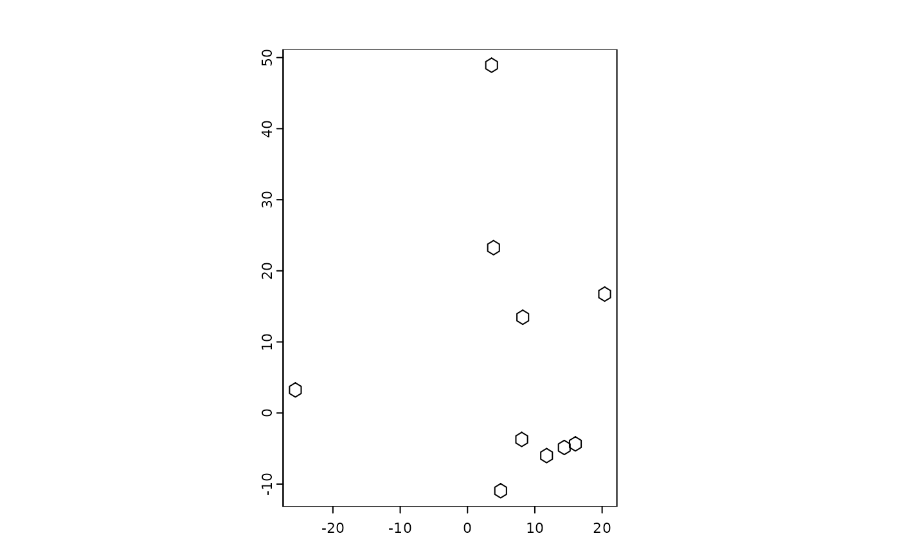
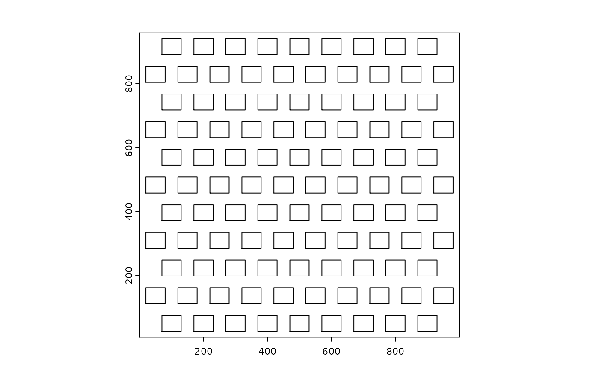

Takes a given stamp polygon and places it at each spatial location provided.
Usage
polyStamp(
stamp_dt,
spatlocs,
id_col = "cell_ID",
x_col = "sdimx",
y_col = "sdimy",
verbose = TRUE
)Arguments
- stamp_dt
data.table with x and y vertices for a polygon to be stamped. Column names are expected to be 'x' and 'y' respectively
- spatlocs
spatial locations with x and y coordinates where polygons should be stamped. Column names are 'cell_ID', 'sdimx' and 'sdimy' by default
- id_col
column in spatlocs to use as IDs (default is 'cell_ID')
- x_col
column in spatlocs to use as x locations (default is 'sdimx')
- y_col
column in spatlocs to use as y locations (default is 'sdimy')
- verbose
be verbose
See also
Other polygon stamping:
circleVertices(),
hexVertices(),
rectVertices()
Examples
# stamp shapes
hex <- hexVertices(radius = 1)
spatlocs <- data.table::data.table(
sdimx = rnorm(10, mean = 5, sd = 20),
sdimy = rnorm(10, mean = 5, sd = 20),
cell_ID = paste0("spot_", seq_len(10))
)
random_hex <- polyStamp(hex, spatlocs)
#> 10 polygons generated
random_hex_poly <- createGiottoPolygon(random_hex)
#> Selecting col "poly_ID" as poly_ID column
#> Selecting cols "x" and "y" as x and y respectively
plot(random_hex_poly)

# make a grid of shapes
e <- c(0, 1000, 0, 1000)
tg <- triGrid(extent = e, ccd = 100, id_prefix = "bin_")
r <- rectVertices(dims = c(x = 60, y = 50))
rect_grid_dt <- polyStamp(stamp_dt = r, spatlocs = tg)
#> 104 polygons generated
rect_poly <- createGiottoPolygon(rect_grid_dt)
#> Selecting col "poly_ID" as poly_ID column
#> Selecting cols "x" and "y" as x and y respectively
plot(rect_poly)
